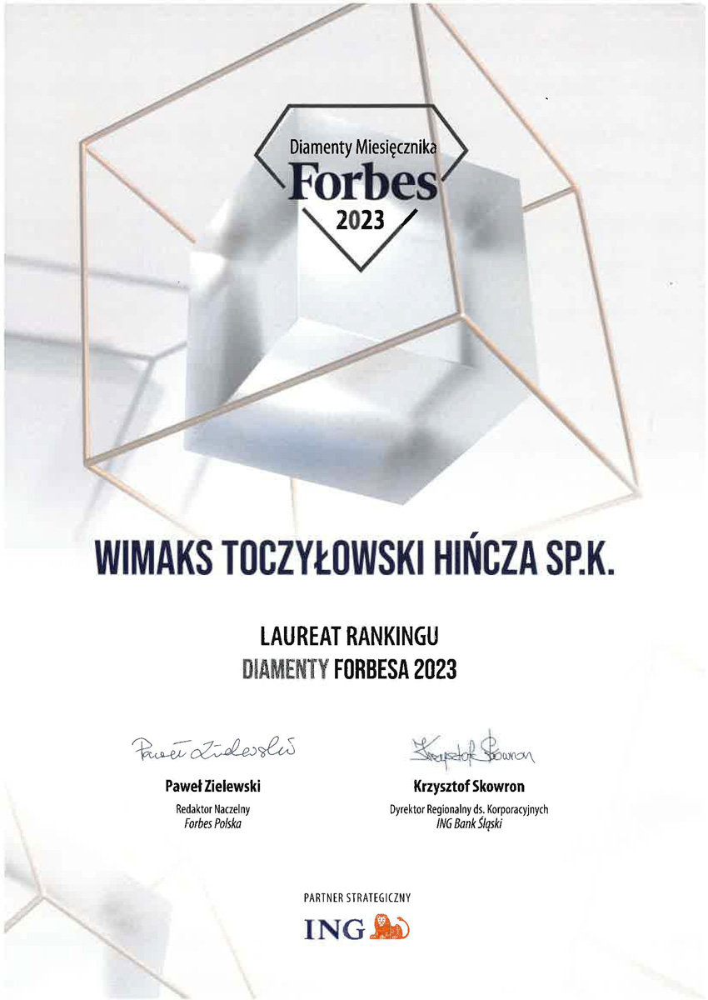
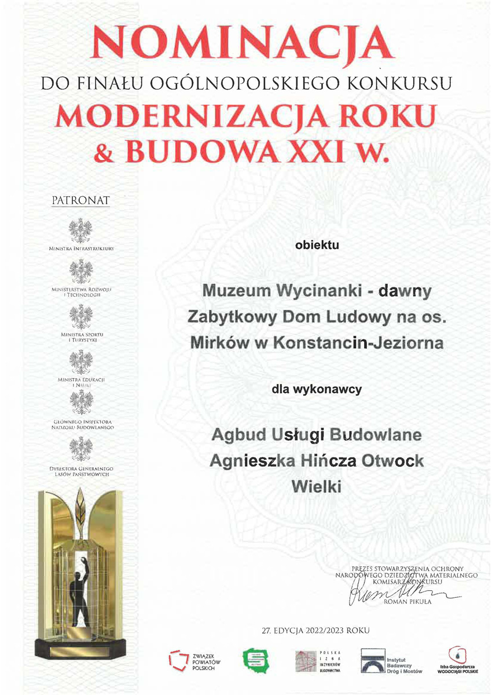

WiMAKS Toczyłowski sp.k.
ul. Wawerska 48c
05-420 Józefów
KRS: 0000615810
NIP: 7010575390
REGON: 364411534

Działamy na rynku budowlanym od 2007 roku, zdobywając doświadczenie i zaufanie klientów na terenie całej Polski. Jako kompleksowy wykonawca i projektant inwestycji budowlanych realizujemy zaawansowane projekty budowlane dla obiektów użyteczności publicznej, kompleksów przemysłowych oraz budynków mieszkaniowych wielorodzinnych. Nasze usługi obejmują pełny zakres zarządzania projektami budowlanymi, od fazy projektowania, przez koordynację robót, aż do ostatecznych odbiorów i uruchomienia inwestycji.
Naszym głównym celem jest sprostanie każdemu wyzwaniu budowlanemu, niezależnie od jego skali czy złożoności — od projektów standardowych po bardzo indywidualne i nietypowe przedsięwzięcia. Każde zlecenie traktujemy jako nowe zadanie wymagające zaangażowania i analitycznego podejścia. Szczegółowo analizujemy potrzeby inwestora i wymagania projektu, poszukujemy optymalnych rozwiązań technicznych i ekonomicznych, a następnie dopasowujemy strategie realizacji do specyfiki i charakteru obiektu. Stawiamy na autentyczną, partnerską współpracę, precyzyjne ustalenia i pełną odpowiedzialność za jakość wykonanych robót. Kombinując szerokie doświadczenie branżowe, sprawną organizację procesów budowlanych i profesjonalny nadzór jakości, zapewniamy terminową realizację projektów w pełnej zgodzie z wcześniej uzgodnionym standardem. Satysfakcja i zadowolenie naszego Klienta stanowi najważniejszą miarę naszego sukcesu.
Najwyższą naszą prioritetą jest konsekwentna jakość realizowanych usług budowlanych, ponieważ rekomendacja naszej firmy przez zadowolonego klienta stanowi dla nas najlepszą i najbardziej wartościową formę promocji. Dlatego inwestujemy w przejrzystą komunikację na każdym etapie projektu, precyzyjne przestrzeganie uzgodnionych harmonogramów robót oraz ciągłą, ścisłą kontrolę jakości każdej fazy wykonania, gwarantując powtarzalny i niezmienny standard profesjonalnych usług. Konsekwentnie stawiamy na współpracę z doświadczonymi i rzetelnymi partnerami, sprawdzone i nowoczesne rozwiązania techniczne oraz materiały wysokiej jakości. Każdy projekt budowlany realizujemy z wyjątkową dbałością o bezpieczeństwo pracowników i otoczenia, utrzymanie porządku i czystości na terenie budowy, ścisłą zgodność z dokumentacją projektową oraz pełne spełnienie wszystkich wymagań i oczekiwań inwestora. Wysoką jakość naszych kompleksowych usług budowlanych poświadczają liczne referencje od zadowolonych klientów z całej Polski.
Zobacz nasze referencjeNasze zaangażowanie w ciągłe doskonalenie procesów, podnoszenie standardów jakości i inwestycje w rozwój zespołu zostały dostrzeżone przez branżę budowlaną. Dzień po dniu pracujemy nad tym, aby być lepszymi, bardziej efektywnymi i bardziej innowacyjnymi. Każde wyzwanie traktujemy jako szansę do nauki, a każdy projekt to okazja do doskonalenia naszych umiejętności. Wyróżnienia, które otrzymaliśmy, to potwierdzenie naszej pracy, dedykacji i wiary w to, że jakość nie jest wypadkową, lecz wynika z konsekwentnego podejścia do każdego szczegółu.


ul. Wawerska 48c
05-420 Józefów
KRS: 0000615810
NIP: 7010575390
REGON: 364411534
ul. Wawerska 48c
05-420 Józefów
NIP: 532 134 92 00
REGON: 012375452
ul. Sadowa 47
05-410 Józefów
NIP: 5322051075
REGON: 361040540
ul. Wawerska 48c
05-420 Józefów
NIP: 5322051098
REGON: 361050946